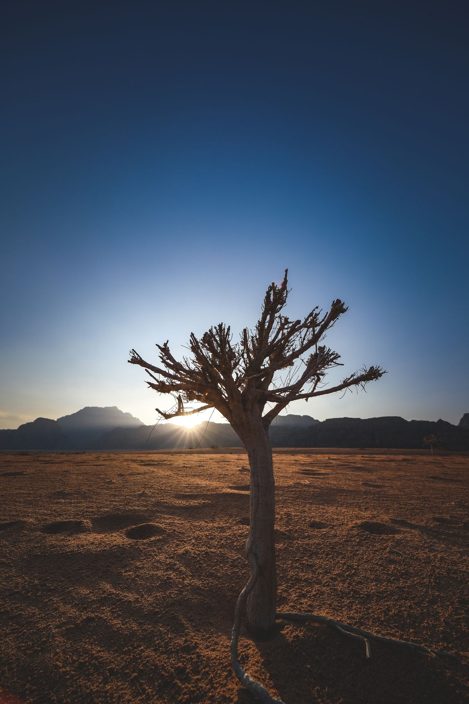
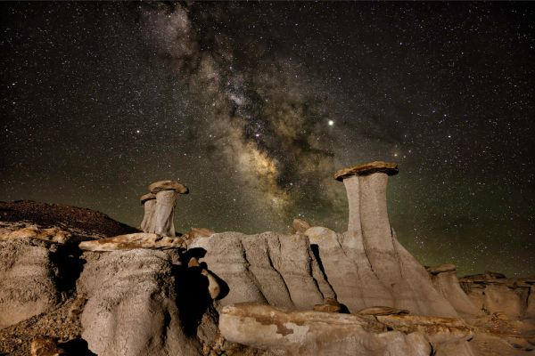
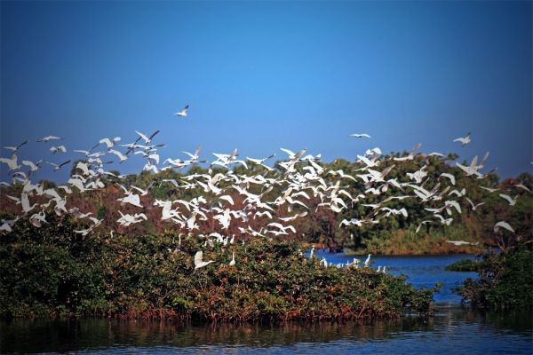
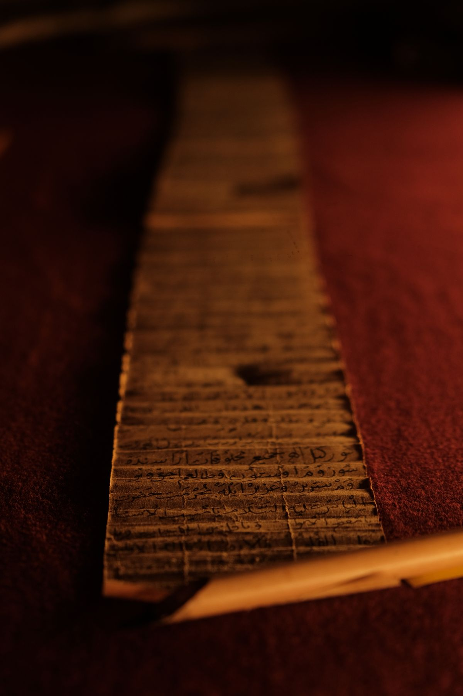
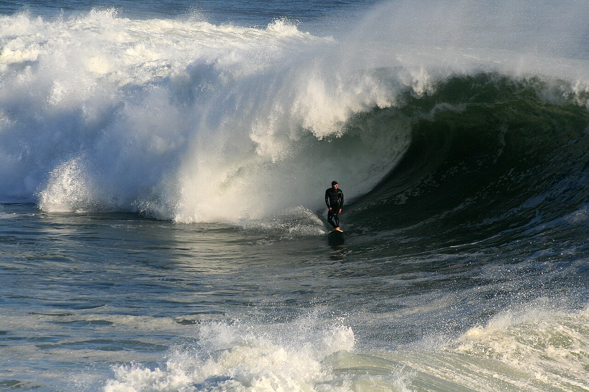

31 Verses in 7 Days, Word by Word: Genesis 1 Explained Verse by Verse for You
You open the Bible at page one.
You open the Bible at page one. The first line is short. It has ten words in the King James text: "In the beginning God created the heaven and the earth." Then the lines get strange. Light comes before the sun. Water sits above the sky and below the sky. God speaks, and things stand up in rows, day by day, like a man setting a house in order room by room. You want to read it slow, one verse at a time, and know what each line says and what it does not say. That is what this post does. We walk all 31 verses of Genesis 1, in order, in plain words. We read from the oldest King James text, we look at the Hebrew words where a Hebrew word opens a verse up, and we say plainly where good readers differ, so you never have to guess which part is the text and which part is talk about the text.
Genesis 1 has 31 verses and tells one week in order: God makes the heaven and the earth, speaks light into a dark and empty earth, sets the sky, the seas, and the dry land in place, fills them with plants, sun, moon, and stars, then with fish, birds, and land beasts, and last makes man and woman in His own image, blesses them, gives them the earth to tend and food to eat, and calls the whole work very good. Verse 1 names God before it names anything else: He is there first, and He is never made by anyone. Read slow, the chapter is not a rush of random acts. It is a pattern: God speaks, it is so, God sees that it is good, and evening and morning close each day, six days of work, and the rest of the week is told at the start of Genesis 2.
What do verses 1 and 2 actually say?
Verse 1 says: "In the beginning God created the heaven and the earth." Count the parts. There is a time word: the beginning. There is a person: God. There is an act: created. There are two things made: the heaven and the earth. In Hebrew, the word for God here is Elohim. The word for created is bara. In the Hebrew Bible, bara is a word used with God as the one who does it. Men build, form, and plant in these early chapters, but bara is kept for God's own act of making. That is a fact about how the word is used, and it is worth seeing on page one: the first act in the Bible is an act only God does.
Verse 2 says: "And the earth was without form, and void; and darkness was upon the face of the deep. And the Spirit of God moved upon the face of the waters." Two Hebrew words sit under "without form, and void": tohu and bohu. Tohu means waste or empty of form. Bohu means void or empty of fill. Say it in plain words: the earth is there, but it has no shape yet and nothing in it yet. It is like a lump of clay on a table before hands touch it. The clay is real. The pot is not there yet. Then the verse ends with life near the water: the Spirit of God moved on the face of the waters. The Hebrew word for moved is a word that can mean to hover or flutter, the way a bird hovers over its young. The picture is care, not cold force. Before God speaks one word of making, His Spirit is already close to the dark water, like a hen over eggs she means to hatch.
Note what verse 2 does not say. It does not say God made the darkness, or that the dark water fought Him, or that He found the earth by chance. The text is quiet where it is quiet. Good reading lets it stay quiet.

What happens on day 1, and how can there be light before the sun?
On day 1, verses 3 to 5, God speaks for the first time: "Let there be light: and there was light." God sees the light, that it is good. He divides the light from the darkness. He calls the light Day, and the darkness He calls Night. "And the evening and the morning were the first day."
This is the hardest idea in the chapter, so we will say it two ways. The sun is not made until day 4. So what light is this on day 1? The text does not name a lamp. It says God spoke light into being and set it apart from dark, and that split, light then dark, is what makes a day.
Picture one. Think of a house with no lamps in it yet, at dawn. Light comes in soft and wide before you can point to where it comes from. You can see the room. Day has come. But no lamp has been hung. On day 4, God hangs the lamps: the sun, the moon, and the stars, and gives them the job of ruling the day and the night and marking times. The light is there on day 1. The lamp posts are set up on day 4.
Picture two. Think of a king who says, "Let this land have roads," and roads are cut. Days later he sets signs on the roads and names towns. The roads came first in the story. The signs came later. In the same way, the chapter puts light first and the light-bearers later. You may find that odd. Many readers do. But our job is to say what the text says, in its order, and the order is: light on day 1, sun and moon on day 4. Where readers differ is on how to hold that order, not on what the order is.
Also see the names. On day 1 God names: Day and Night. Naming is a king's act in the old world. The one who names a thing has rule over it. God names light and dark like a king names land he owns.

What does God set in place on days 2 and 3?
Day 2, verses 6 to 8: God says, "Let there be a firmament in the midst of the waters, and let it divide the waters from the waters." Firmament is an old King James word. The Hebrew word is raqia. It means a thing spread out or beaten out, like a sheet of metal hammered wide, or a tent cloth stretched up. God makes this spread, and it splits water into two parts: water under it and water above it. God calls the firmament Heaven. Evening and morning close the second day. Note this: day 2 is the one day where the text does not say "it was good" at its end. Readers have seen that gap for a long time. The text does not tell us why. We note it, and we do not invent a cause.
Day 3, verses 9 to 13, has two acts. First, the waters under the heaven are gathered into one place, and dry land shows. God calls the dry land Earth, and the gathered waters He calls Seas. God sees that it is good. Second, the earth brings forth grass, herb that yields seed, and fruit tree that yields fruit with its seed in it, "after his kind." After his kind means each plant makes more of its own sort: an apple tree makes apples with apple seeds, not pears. The seed is in the fruit from the start. Life that can make more life is built into day 3. God sees that it is good. Evening and morning close the third day.
Watch the pattern grow. Days 1 to 3 give form: light and dark split, sky split from sea, sea split from land, and the land filled with green growth. The lump of clay from verse 2 now has shape. Days 4 to 6 will fill the shapes.

What fills the sky, the sea, and the land on days 4 to 6?
Day 4, verses 14 to 19: God sets lights in the firmament: the greater light to rule the day, the lesser light to rule the night, and the stars also. Their jobs are named: to divide day from night, to be for signs, for seasons, for days, and for years. A season is a set part of the year, like spring. The sun and moon are clocks and calendars in the sky. Note the care of the text: it does not call them by the names other nations used for their gods. It calls them "the greater light" and "the lesser light," mere lamps made by God. In a world where men bowed to the sun, this chapter says the sun is a made thing, a tool in God's hand. God sees that it is good. Evening and morning close the fourth day.
Day 5, verses 20 to 23: the waters bring forth moving creatures with life, and birds fly above the earth in the open firmament. God makes great whales, which is the King James way of saying the great sea creatures, and every living thing that moves in the waters, and every winged bird, after their kind. Then, for the first time, God blesses creatures: "Be fruitful, and multiply." Blessing is God's good word spoken over a life so that life grows. Fish and birds get the first blessing in the Bible. God sees that it is good. Evening and morning close the fifth day.
Day 6, verses 24 to 31, also has two acts. First, the earth brings forth cattle, creeping things, and beasts of the earth, after their kind. Then God speaks the high point of the week: "Let us make man in our image, after our likeness." Verse 27 says it three ways in one line: "So God created man in his own image, in the image of God created he him; male and female created he them." Image means a likeness, the way a statue bears the likeness of a king, or a son bears the face of his father. Man and woman are made to bear God's likeness on the earth and to rule it for Him: over fish, birds, cattle, and all the earth. God blesses them, as He blessed the fish and birds, and says: be fruitful and multiply, fill the earth, and subdue it. Subdue means to bring it under care and rule, the way a good king brings peace to his land, not the way a thief strips a house. Then God gives food: every herb with seed and every tree with fruit for man, and green herb for the beasts, birds, and creeping things. In this chapter, no creature eats another. Verse 31 closes: "And God saw every thing that he had made, and, behold, it was very good." Not just good. Very good. Evening and morning close the sixth day.

Why does the chapter keep saying the same lines?
Read the chapter out loud and you will hear a drum beat. "And God said." "And it was so." "And God saw that it was good." "And the evening and the morning were the first day," the second day, the third day, and on. This beat is not filler. It teaches three things.
First, God makes by His word. He speaks, and the thing stands. No fight, no sweat, no lack. Second, God judges His own work. He looks at each part and calls it good. Good here means fit for its job and right in its place, like a key that fits its lock. Third, time itself is made in an order. A day has evening first, then morning, dark then light. That order, evening and morning, is the order Israel kept for its days. The week you live in, seven days with rest at the end, is set up in this chapter's beat. The seventh day, God's rest, is told at the start of Genesis 2, verses 1 to 3, where God ends His work, rests, blesses the seventh day, and makes it holy. Holy means set apart for God.
One more pattern to see. Days 1 and 4 match: light, then the lights. Days 2 and 5 match: sky and sea, then birds and fish to fill them. Days 3 and 6 match: dry land with plants, then beasts and man to live on the land and eat the plants. Form first, then fill. The chapter is built like a house: walls raised in order, then each room furnished. When you see the pattern, the chapter is easy to hold in your mind whole.

What do the oldest copies show us?
On this site we read from three wells: the oldest King James text in English, the Hebrew Bible, and the Dead Sea Scrolls. The scrolls are old copies of the Hebrew books, found in caves near the Dead Sea, written more than two thousand years ago. Parts of Genesis were found among them. Why does that count? Because a copy that old lets us check the words we read now against words written down long before the King James men did their work. The Genesis text in those old copies stands very close to the Hebrew text used for our Bibles. That does not settle every hard line, and honest readers still differ on some. But it does mean the chapter in your hands is not a new tale. It is an old text, kept with care, and we treat it that way: we teach what it says, and where we are not sure, we say we are not sure.
Checklist:
- Read Genesis 1 out loud once, all 31 verses, and mark each line that says "And God said"
- Write the six days in two rows of three: form on days 1 to 3, fill on days 4 to 6
- Find the one day with no "it was good" at its end, and note that the text gives no cause
- Say verse 27 in your own plain words: who made man, in whose image, male and female
- Mark the food rule of verse 29 and 30: what man eats, what the beasts eat, in this chapter
Your free tool for this step
Use the Journey Tracker on The Right Way site. You can find it here: https://therightway.life/tools/journey-tracker.html
The Journey Tracker is a free tool that keeps your place on the journey through the Bible, chapter by chapter, in order. This post is the companion for Genesis 1, the first step of the journey. Here is how to use it for this step. Open the tracker and mark Genesis 1 as read. Write one short note next to it: the day you keep mixing up, or the verse you want to read again. Most readers write the day 1 and day 4 light question there, because it is the line they want to sit with. When you read Genesis 2 next, the tracker shows you that chapter 1 is done and chapter 2 is next, so the order of the journey is never lost.
The tracker does not read the chapter for you, and it does not grade your notes. It does one plain job: it holds your place and your own short notes, so a study that runs for months stays in order. Everything on this site is free. This work is kept free for every reader, and some readers give toward the labor of making it. That is the only way it is kept going.

The bottom line
Genesis 1 is 31 verses and one full week. God is there before all things. He speaks, and light splits from dark, sky from sea, sea from land. He fills each place He forms: lamps in the sky, fish and birds in sea and air, beasts and man on the land. Man and woman are made in His image, blessed, given rule and food. Each day closes with evening and morning, and the whole work is called very good. Read it slow. Let each verse say what it says. Then mark it done in your tracker, and come to Genesis 2, where the same week is told again, close up, at the level of dust and breath and a garden.